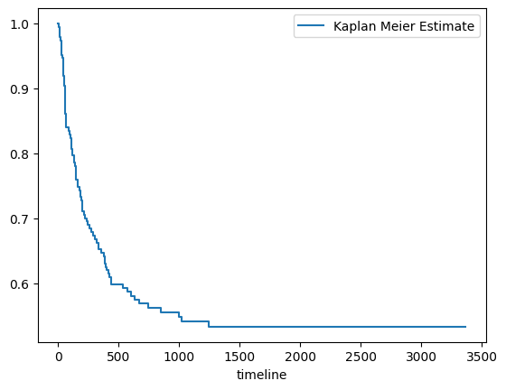
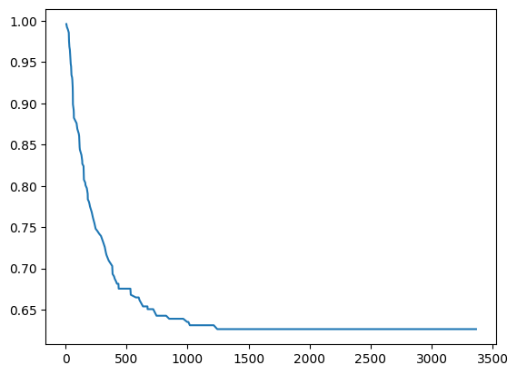
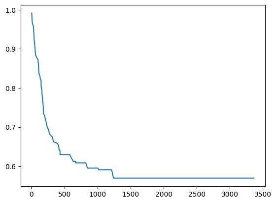

Survival analysis
This notebook presents example usage of package for solving survival problem on bmt dataset. You can download dataset here
This tutorial will cover topics such as:
- training model
- changing model hyperparameters
- hyperparameters tuning
- calculating metrics for model
- getting RuleKit inbuilt
Summary of the dataset
[1]:
from scipy.io import arff
import pandas as pd
import matplotlib.pyplot as plt
import numpy as np
datasets_path = ""
file_name = 'bmt.arff'
data_df = pd.DataFrame(arff.loadarff(open(datasets_path + file_name, 'r', encoding="cp1252"))[0])
# code to fix the problem with encoding of the file
tmp_df = data_df.select_dtypes([object])
tmp_df = tmp_df.stack().str.decode("cp1252").unstack()
for col in tmp_df:
data_df[col] = tmp_df[col]
data_df = data_df.replace({'?': None})
[2]:
data_df
[2]:
| Recipientgender | Stemcellsource | Donorage | Donorage35 | IIIV | Gendermatch | DonorABO | RecipientABO | RecipientRh | ABOmatch | ... | extcGvHD | CD34kgx10d6 | CD3dCD34 | CD3dkgx10d8 | Rbodymass | ANCrecovery | PLTrecovery | time_to_aGvHD_III_IV | survival_time | survival_status | |
|---|---|---|---|---|---|---|---|---|---|---|---|---|---|---|---|---|---|---|---|---|---|
| 0 | 1 | 1 | 22.830137 | 0 | 1 | 0 | 1 | 1 | 1 | 0 | ... | 1 | 7.20 | 1.338760 | 5.38 | 35.0 | 19.0 | 51.0 | 32.0 | 999.0 | 0.0 |
| 1 | 1 | 0 | 23.342466 | 0 | 1 | 0 | -1 | -1 | 1 | 0 | ... | 1 | 4.50 | 11.078295 | 0.41 | 20.6 | 16.0 | 37.0 | 1000000.0 | 163.0 | 1.0 |
| 2 | 1 | 0 | 26.394521 | 0 | 1 | 0 | -1 | -1 | 1 | 0 | ... | 1 | 7.94 | 19.013230 | 0.42 | 23.4 | 23.0 | 20.0 | 1000000.0 | 435.0 | 1.0 |
| 3 | 0 | 0 | 39.684932 | 1 | 1 | 0 | 1 | 2 | 1 | 1 | ... | None | 4.25 | 29.481647 | 0.14 | 50.0 | 23.0 | 29.0 | 19.0 | 53.0 | 1.0 |
| 4 | 0 | 1 | 33.358904 | 0 | 0 | 0 | 1 | 2 | 0 | 1 | ... | 1 | 51.85 | 3.972255 | 13.05 | 9.0 | 14.0 | 14.0 | 1000000.0 | 2043.0 | 0.0 |
| ... | ... | ... | ... | ... | ... | ... | ... | ... | ... | ... | ... | ... | ... | ... | ... | ... | ... | ... | ... | ... | ... |
| 182 | 1 | 1 | 37.575342 | 1 | 1 | 0 | 1 | 1 | 0 | 0 | ... | 1 | 11.08 | 2.522750 | 4.39 | 44.0 | 15.0 | 22.0 | 16.0 | 385.0 | 1.0 |
| 183 | 0 | 1 | 22.895890 | 0 | 0 | 0 | 1 | 0 | 1 | 1 | ... | 1 | 4.64 | 1.038858 | 4.47 | 44.5 | 12.0 | 30.0 | 1000000.0 | 634.0 | 1.0 |
| 184 | 0 | 1 | 27.347945 | 0 | 1 | 0 | 1 | -1 | 1 | 1 | ... | 1 | 7.73 | 1.635559 | 4.73 | 33.0 | 16.0 | 16.0 | 1000000.0 | 1895.0 | 0.0 |
| 185 | 1 | 1 | 27.780822 | 0 | 1 | 0 | 1 | 0 | 1 | 1 | ... | 0 | 15.41 | 8.077770 | 1.91 | 24.0 | 13.0 | 14.0 | 54.0 | 382.0 | 1.0 |
| 186 | 1 | 1 | 55.553425 | 1 | 1 | 0 | 1 | 2 | 1 | 1 | ... | 1 | 9.91 | 0.948135 | 10.45 | 37.0 | 18.0 | 20.0 | 1000000.0 | 1109.0 | 0.0 |
187 rows × 37 columns
[3]:
print("Dataset overview:")
print(f"Name: {file_name}")
print(f"Objects number: {data_df.shape[0]}; Attributes number: {data_df.shape[1]}")
print("Basic attribute statistics:")
data_df.describe()
Dataset overview:
Name: bmt.arff
Objects number: 187; Attributes number: 37
Basic attribute statistics:
[3]:
| Donorage | Recipientage | CD34kgx10d6 | CD3dCD34 | CD3dkgx10d8 | Rbodymass | ANCrecovery | PLTrecovery | time_to_aGvHD_III_IV | survival_time | survival_status | |
|---|---|---|---|---|---|---|---|---|---|---|---|
| count | 187.000000 | 187.000000 | 187.000000 | 182.000000 | 182.000000 | 185.000000 | 187.000000 | 187.000000 | 187.000000 | 187.000000 | 187.000000 |
| mean | 33.472068 | 9.931551 | 11.891781 | 5.385096 | 4.745714 | 35.801081 | 26752.866310 | 90937.919786 | 775408.042781 | 938.743316 | 0.454545 |
| std | 8.271826 | 5.305639 | 9.914386 | 9.598716 | 3.859128 | 19.650922 | 161747.200525 | 288242.407688 | 418425.252689 | 849.589495 | 0.499266 |
| min | 18.646575 | 0.600000 | 0.790000 | 0.204132 | 0.040000 | 6.000000 | 9.000000 | 9.000000 | 10.000000 | 6.000000 | 0.000000 |
| 25% | 27.039726 | 5.050000 | 5.350000 | 1.786683 | 1.687500 | 19.000000 | 13.000000 | 16.000000 | 1000000.000000 | 168.500000 | 0.000000 |
| 50% | 33.550685 | 9.600000 | 9.720000 | 2.734462 | 4.325000 | 33.000000 | 15.000000 | 21.000000 | 1000000.000000 | 676.000000 | 0.000000 |
| 75% | 40.117809 | 14.050000 | 15.415000 | 5.823565 | 6.785000 | 50.600000 | 17.000000 | 37.000000 | 1000000.000000 | 1604.000000 | 1.000000 |
| max | 55.553425 | 20.200000 | 57.780000 | 99.560970 | 20.020000 | 103.400000 | 1000000.000000 | 1000000.000000 | 1000000.000000 | 3364.000000 | 1.000000 |
Survival curve for the entire set (Kaplan Meier curve)
[4]:
from lifelines import KaplanMeierFitter
# create a kmf object
kmf = KaplanMeierFitter()
# Fit the data into the model
kmf.fit(data_df['survival_time'], data_df['survival_status'],label='Kaplan Meier Estimate')
# Create an estimate
kmf.plot(ci_show=False)
[4]:
<Axes: xlabel='timeline'>

Import RuleKit
[5]:
from rulekit.survival import SurvivalRules
from rulekit.params import Measures
Helper function for creating ruleset characteristics dataframe
[6]:
def get_ruleset_stats(model) -> pd.DataFrame:
tmp = model.parameters.__dict__
del tmp['_java_object']
return pd.DataFrame.from_records([{**tmp, **model.stats.__dict__}])
Rule induction on full dataset
[7]:
X = data_df.drop(['survival_status'], axis=1)
y = data_df['survival_status']
[8]:
srv = SurvivalRules(
survival_time_attr = 'survival_time'
)
srv.fit(X, y)
ruleset = srv.model
predictions = srv.predict(X)
ruleset_stats = get_ruleset_stats(ruleset)
display(ruleset_stats)
| minimum_covered | maximum_uncovered_fraction | ignore_missing | pruning_enabled | max_growing_condition | time_total_s | time_growing_s | time_pruning_s | rules_count | conditions_per_rule | induced_conditions_per_rule | avg_rule_coverage | avg_rule_precision | avg_rule_quality | pvalue | FDR_pvalue | FWER_pvalue | fraction_significant | fraction_FDR_significant | fraction_FWER_significant | |
|---|---|---|---|---|---|---|---|---|---|---|---|---|---|---|---|---|---|---|---|---|
| 0 | 5.0 | 0.0 | False | True | 0.0 | 2.245832 | 1.209875 | 1.013907 | 5 | 2.4 | 72.4 | 0.407487 | 1.0 | 0.999742 | 0.000258 | 0.00029 | 0.000384 | 1.0 | 1.0 | 1.0 |
[9]:
plt.plot(predictions[0]["times"], predictions[0]["probabilities"])
[9]:
[<matplotlib.lines.Line2D at 0x238cf43a910>]

Generated rules
[10]:
for rule in ruleset.rules:
print(rule)
IF Relapse = {0} AND Donorage = (-inf, 45.16) AND Recipientage = (-inf, 17.45) THEN
IF HLAmismatch = {0} AND Donorage = <33.34, 42.14) AND Gendermatch = {0} AND RecipientRh = {1} AND Recipientage = <3.30, inf) THEN
IF Relapse = {1} AND PLTrecovery = <15.50, inf) THEN
IF PLTrecovery = (-inf, 266) THEN
IF PLTrecovery = <266, inf) THEN
Rules evaluation on full set
[11]:
integrated_brier_score = srv.score(X, y)
print(f'Integrated Brier Score: {integrated_brier_score}')
Integrated Brier Score: 0.19431881630173065
Stratified K-Folds cross-validation
[12]:
from sklearn.model_selection import StratifiedKFold
from rulekit.exceptions import RuleKitJavaException
skf = StratifiedKFold(n_splits=10, shuffle=True, random_state=0)
ruleset_stats = pd.DataFrame()
survival_metrics = []
for train_index, test_index in skf.split(X, y):
x_train, x_test = X.iloc[train_index], X.iloc[test_index]
y_train, y_test = y.iloc[train_index], y.iloc[test_index]
srv = SurvivalRules(
survival_time_attr = 'survival_time'
)
try:
srv.fit(x_train, y_train)
except Exception as e:
e = RuleKitJavaException(e)
print(e.print_java_stack_trace())
ruleset = srv.model
ibs = srv.score(x_test, y_test)
survival_metrics.append(ibs)
ruleset_stats = pd.concat([ruleset_stats, get_ruleset_stats(ruleset)])
Ruleset characteristics (average)
[13]:
display(ruleset_stats.mean())
minimum_covered 5.000000
maximum_uncovered_fraction 0.000000
ignore_missing 0.000000
pruning_enabled 1.000000
max_growing_condition 0.000000
time_total_s 1.273897
time_growing_s 0.482035
time_pruning_s 0.790854
rules_count 5.100000
conditions_per_rule 2.535119
induced_conditions_per_rule 69.852381
avg_rule_coverage 0.438761
avg_rule_precision 1.000000
avg_rule_quality 0.992375
pvalue 0.007625
FDR_pvalue 0.007751
FWER_pvalue 0.008209
fraction_significant 0.948214
fraction_FDR_significant 0.948214
fraction_FWER_significant 0.948214
dtype: float64
Rules evaluation on dataset (average)
[14]:
print(f'Integrated Brier Score: {np.mean(survival_metrics)}')
Integrated Brier Score: 0.2057312271821908
Hyperparameters tuning
This one gonna take a while…
[15]:
from sklearn.model_selection import StratifiedKFold
from sklearn.model_selection import GridSearchCV
from rulekit.params import Measures
[16]:
def scorer(estimator, X, y):
return (-1 * estimator.score(X,y))
[17]:
# define models and parameters
model = SurvivalRules()
# define grid search
grid = {
'survival_time_attr': ['survival_time'],
'minsupp_new': range(3, 10),
}
cv = StratifiedKFold(n_splits=3)
grid_search = GridSearchCV(estimator=model, param_grid=grid, cv=cv, scoring=scorer)
grid_result = grid_search.fit(X, y)
# summarize results
print("Best Integrated Brier Score: %f using %s" % ( (-1)*grid_result.best_score_, grid_result.best_params_))
Best Integrated Brier Score: 0.214374 using {'minsupp_new': 3, 'survival_time_attr': 'survival_time'}
Building model with tuned hyperparameters
Split dataset to train and test (80%/20%)
[18]:
from sklearn.model_selection import train_test_split
X_train, X_test, y_train, y_test = train_test_split(X, y, test_size=0.2, shuffle=True, stratify=y)
srv = SurvivalRules(
survival_time_attr='survival_time',
minsupp_new=5
)
srv.fit(X_train, y_train)
ruleset = srv.model
ruleset_stats = get_ruleset_stats(ruleset)
Rules evaluation
[19]:
display(ruleset_stats.iloc[0])
minimum_covered 5.0
maximum_uncovered_fraction 0.0
ignore_missing False
pruning_enabled True
max_growing_condition 0.0
time_total_s 0.625197
time_growing_s 0.259452
time_pruning_s 0.364996
rules_count 5
conditions_per_rule 3.2
induced_conditions_per_rule 61.0
avg_rule_coverage 0.430872
avg_rule_precision 1.0
avg_rule_quality 0.999995
pvalue 0.000005
FDR_pvalue 0.000005
FWER_pvalue 0.000005
fraction_significant 1.0
fraction_FDR_significant 1.0
fraction_FWER_significant 1.0
Name: 0, dtype: object
Validate model on test dataset
[20]:
integrated_brier_score = srv.score(X_test, y_test)
print(f'Integrated Brier Score: {integrated_brier_score}')
Integrated Brier Score: 0.22981693833242725
[21]:
predictions = srv.predict(X_test)
[22]:
plt.plot(predictions[0]["times"], predictions[0]["probabilities"])
[22]:
[<matplotlib.lines.Line2D at 0x238d0326fd0>]
